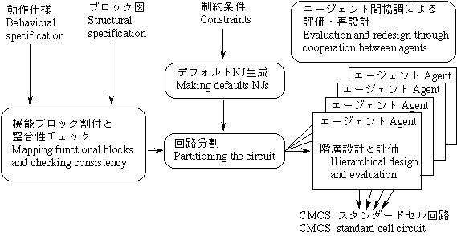

（６６）協調型論理設計エキスパートシステム
マ シ ン：PIM, Multi-PSI
環 境：PIMOS 3.0,
SIMPOS
言 語：KL1
ソース量：3 MB
文 書：なし
概要
面積と時間に関する制約条件を受け取り、その制約条件を満たすCMOSスタンダー
ドセルの回路(ネットリスト)を出力するシステム。
構成

機能
- （１）最適化機能
- 対応する制約条件を厳しくして繰り返すことにより、面積または時間につ
いて厳密に最適な回路が設計できる。
- （２）評価・再設計機構
- 制約違反の十分条件(Nogood Justification:NJ)を利用して評価・再設計
を行う。
- （３）協調設計機構
- 設計の単位となるエージェントは、設計結果(成功の場合)あるいはNJ(失
敗の場合)を交換することにより協調する。
ＦＴＰ
- 協調型論理設計エキスパートシステム [492K]

www-admin@icot.or.jp